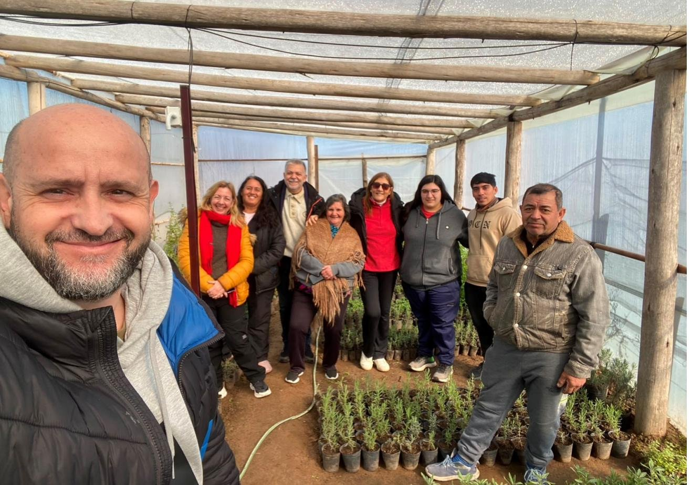
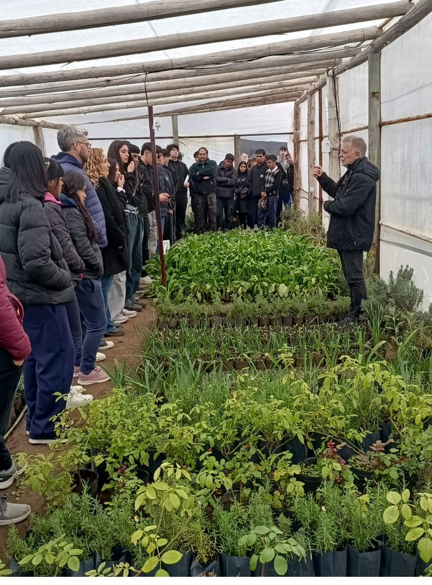
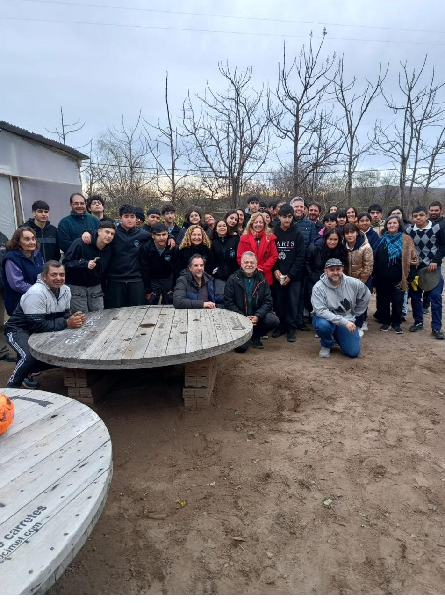

SIVAI es un sistema de vigilancia agrometeorológica que combina sensores de bajo costo e inteligencia artificial para anticipar heladas y ráfagas de viento severas, pensado desde el diseño para la escala de la pequeña agricultura familiar.
Dentro de un invernadero productivo en el paraje rural Daniel Donovan, en el centro de la provincia de San Luis, sensores y modelos de inteligencia artificial trabajan juntos para anticipar el clima antes de que golpee a los cultivos. Es un desarrollo inédito porque no está pensado para grandes explotaciones, sino para la pequeña agricultura familiar: un sector que en Argentina concentra el 66% de las familias que viven en el campo, unas 2 millones de personas.
El sistema integra tres capas que corren de forma automatizada, con ejecución horaria: la red de sensores en el invernadero, la plataforma de inteligencia artificial que cruza datos históricos y en tiempo real, y la visualización que llega al celular del productor.
Instalación de sensores de suelo y ambiente dentro del invernadero de Donovan, con una red de comunicación (ThingSpeak IoT) que reporta temperatura y humedad bajo cubierta en tiempo real.
Un servidor propio en la UNSL cruza los datos de los sensores con el historial y el tiempo real de la Red de Estaciones Meteorológicas (REM) de San Luis para estimar las próximas horas.
Un panel accesible centraliza las predicciones de la IA y el estado actual del invernadero, para que el productor decida a tiempo sobre ventilación, riego o calefacción.
Los modelos corren cada hora y muestran sus predicciones junto a los datos reales en el panel que consultan los productores, con una ventana de incertidumbre de seis horas hacia adelante.
El escenario más crítico: el margen de error del pronóstico se reduce especialmente cuando la temperatura cae de forma abrupta, como suele ocurrir antes de una helada.
Ráfagas severas que pueden dañar la estructura del invernadero o los cultivos bajo cubierta.
Información cruzada con la humedad y temperatura interna para decidir ventilación y riego a tiempo, y reducir el estrés de las plantas.
Dos estudiantes de Ingeniería en Computación de la UNSL, Deina Gutiérrez y Lisandro Vásquez, no se conformaron con un solo modelo: construyeron y compararon tres versiones distintas para pronosticar, con hasta seis horas de anticipación, cómo va a evolucionar la temperatura.
Mira únicamente el historial de la estación meteorológica de Donovan para proyectar su comportamiento futuro. Es el punto de partida.
Suma, por separado, datos de las estaciones Nogolí, Desaguadero, Villa Mercedes y Martín de Loyola, bajo la lógica de que el clima "viaja" hacia Donovan con horas de demora.
Combina las cuatro estaciones vecinas en un solo índice, dando más peso a las que muestran mayor correlación real con el clima de Donovan. Resultó el más preciso de los tres.
El equipo interdisciplinario trabaja codo a codo con los productores de la Asociación Civil "Daniel Donovan", que participan del diseño y la puesta a punto del sistema.



El proyecto reúne a los departamentos de Informática y Electrónica de la Facultad de Ciencias Físico Matemáticas y Naturales (UNSL), el INTA, la Sociedad Rural de San Luis y la Asociación Civil "Daniel Donovan".
Dirección del proyecto — plataformas escalables, simulación y análisis de datos
Redes de sensores aplicadas al agro
Bases de datos, algoritmos y modelado predictivo
Bases de datos, algoritmos y modelado predictivo
Jefe AER San Luis, INTA — transformación digital y desarrollo territorial
Equipo técnico del proyecto
Equipo técnico del proyecto
Estudiante de Ing. en Computación, UNSL — modelos predictivos
Estudiante de Ing. en Computación, UNSL — modelos predictivos
Productora, Asociación Civil Daniel Donovan
Productor, Asociación Civil Daniel Donovan
SIVAI demuestra que la tecnología más avanzada sólo alcanza su verdadero impacto cuando se sostiene sobre un tejido institucional sólido y un compromiso con el territorio.
La validación del sistema en el invernadero piloto de Donovan es un primer paso. La idea es generar un modelo replicable, capaz de escalar hacia otros productores y otras zonas semiáridas con desafíos similares.
Reducción de pérdidas productivas por eventos extremos mediante el pronóstico microclimático.
Transformación digital y capacitación técnica para la adopción de la tecnología por parte de los propios productores.
Arquitectura escalable y adaptable a otros productores y otras zonas semiáridas del país.
Predicciones, alertas y estado del invernadero de Donovan, actualizados cada hora.
sivai.unsl.edu.ar →